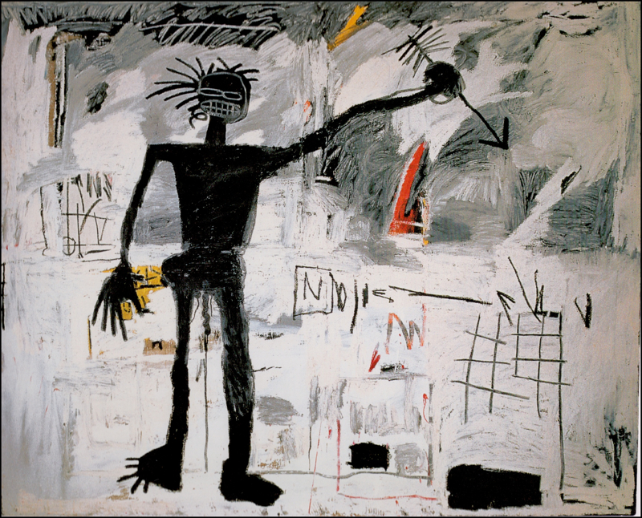

1/4
Riddle Me This Batman was created in 1987, just one year before
Basquiat died in 1988, aged just 28. This art work was made using
acrylic crayon on paper, a medium that Basquiat used in several other
of his works. This drawing is, as its title suggests, clearly a
reference to the popular Batman comic and movie franchise. In the
drawing, we can see Batman, Robin and the Joker. However, these easily
recognisable cultural symbols are problematised, and somewhat
subverted.
2/4

The self-portrait painting is one of many painting that Jean-Michel
Basquiat did to depict certain issues in the society through painting.
Jean-Michel Basquiat used bright and cool colors in the painting which
makes to show the true artistic work in the painting.
3/4
Basquiat created this piece, now known as Fallen Angel, in 1981. It
was one of his early works, as he made the crossover from street art
to painting on canvas. Still filled with his raw energy and emotion,
Basquiat used acrylics, oilstick and spray paint to create this image.
The colours used by Basquiat have been described as "the colours of
the street" by writer, Prat, an apt description of the bright star who
developed his skills as part of the graffiti duo SAMO.
4/4
The piece was sold at auction in France as recently as 2017 for the
highest price yet achieved by any Basquiat paintings within this
country. Most of his privately owned pieces remain dotted around his
native US, including a large proportion of his output from the 1980s.
He was highly prolific though, so there was plenty else to also
feature within some notable public art galleries and museums. This
particular piece measures over two metres in width and height, with
the artist hoping to combine his bold content with large canvases to
create an overwhelming experience for viewers of his work. He is known
to have used acrylic and grease pencil on wood for this artwork and a
considerable amount of research was completed on it in the lead up to
its private sale back in 2017.
❮
❯